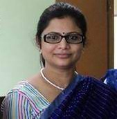
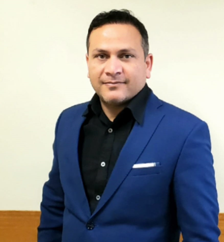
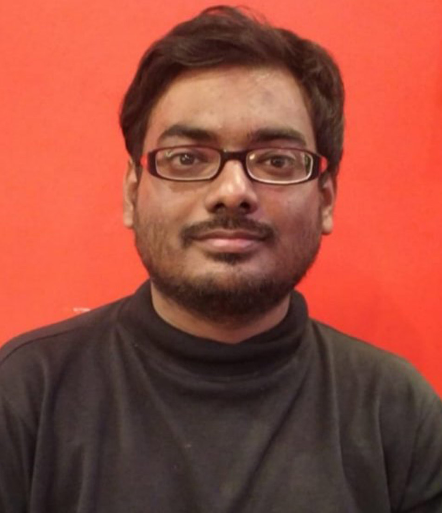

Molecular Communications as a Novel Avenue for Future Healthcare
|
Abstract: The emerging field of molecular communication aims to create artificial communication systems from biological components as well as characterize natural systems that are found in nature. In the natural system case, molecular signals and its interactions between biological cells can be characterized as a communication system, where they can provide new perspectives and insights to address healthcare challenges. This can result in novel tools that can assist future biotechnologists in developing novel therapeutic solutions for treatments. This seminar will start with a general introduction into the field of molecular communications before it dives into a number of examples for healthcare applications. This includes modeling the respiratory viral propagation, digestive system propagation of nutrients, multi-species communications in the Gut Bacteriome, as well as natural Boolean logic computing through calcium signaling. Lastly, the seminar will touch on future challenges and the concept of Internet of Bio-Nano Things that will interface between the cyber domain and molecular communication and computing systems.
|
Dr. Sasitharan Balasubramaniam
Associate Professor
School of Computing
College of Engineering
University of Nebraska-Lincoln
Lincoln, NE 68588-0115
|
Brief Bio: Dr. Sasitharan (Sasi) Balasubramaniam received the Bachelors of Engineering (Electrical and Electronics) from the University of Queensland, 1998, Masters of Engineering Science (Computer and Communication Engineering) from the Queensland University of Technology, 1999, and the PhD in Computer Science from the University of Queensland, 2005. He is currently an Associate Professor at the School of Computing, University of Nebraska-Lincoln. Previously, Sasi was the Director of Research at the Walton Institute, Waterford Institute of Technology, Ireland. He was a Principle Investigator in SFI Research Centres, VistaMilk and CONNECT and a Funded Investigator in SFI Research Centre FutureNeuro. He was also previously an Academy of Finland Research Fellow at the Department of Electronic and Communication Engineering, Tampere University, Finland. His research interests includes molecular communications modeling and simulations, neural communication and nano brain implants, as well as the Internet of Bio -Nano Things. Sasi is currently an IEEE Senior Member and an ACM Member. He is currently an Associate Editor for IEEE Transactions on Mobile Computing, IEEE Transactions on Molecular, Biological, and Multi-scale Communications and Editor for Elsevier Nano Communication. He was previously an Associate Editor for IEEE Internet of Things journal. In 2018, he was an IEEE Nanotechnology Council Distinguished Lecturer.
|
AI/ML Applications in Digital Health
|
Abstract: In recent years we are working on developing several AI-based assistants to help improve the physical and mental health issues of common people of the society. In order to support telemedicine facilities, we have developed some virtual doctors which can conduct symptom investigations and can replace junior doctors in a hospital. In general in a hospital, when patients report, firstly a junior doctor used to conduct a symptom investigation by asking some relevant questions, and finally, a senior doctor takes the decision about the illness based on the symptoms investigated. We have developed a virtual doctor with the support of AL, ML, and NLP techniques which can conduct symptom investigation. This conversational agent is capable of detecting symptoms either from textual responses of the patients or the images shown by the patient. I will discuss about the research challenges faced during this virtual doctor development in the first part of my talk. Second part of my talk will discuss the research challenges faced for the development of a motivational chat-bot which will act as the first point of contact for patients suffering from mental distress. This conversational agent generates emphatetic and motivational utterances to help in boosting the morale of the patients who are suffering from some mental disorders.
|

Dr. Sriparna Saha
Associate Professor
Department of Computer Science and Engineering
Indian Institute of Technology Patna
Bihta, Patna -801103, Bihar, India
|
Brief Bio: Dr. Sriparna Saha received the M.Tech and Ph.D. degrees in computer science from Indian Statistical Institute Kolkata, Kolkata, India, in 2005 and 2011, respectively. She is currently an Associate Professor and Head of the Department of Computer Science and Engineering, Indian Institute of Technology Patna, India. She has authored or coauthored more than 300 papers. Her current research interests include deep learning, natural language processing, machine learning, information extraction, text mining, bioinformatics and multiobjective optimization. Stanford University in a survey, also listed her as one of the top 2% scientists in AI with more than five published papers. She is the Associate Editors of several reputed journals including IEEE Transactions of Computational Social Systems, IEEE/ACM Transactions on Computational Biology and Bioinformatics, Plos One, Pattern Recognition Letters, Expert Systems with Applications, Neurocomputing, ACM Transactions on Asian and Low-Resource Language Information Processing etc. Her current h5-index is 31 and total citation count of her papers is more than 6000 (according to Google scholar).
|
6G: Industrial AI Perspectives
|
Abstract: Intelligence is the ability to model our thinking and sensing processes through various intelligent models. In industrial AI, engineers develop and deploy AI algorithms consistently and systematically to achieve repeatable and consistent results. Therefore, in this talk, I will explain the different trends of Industrial AI and how it is different from Industry 4.0. Moreover, different societal versions will explain in comparison with Industrial AI. In the end, other vital challenges and use case will be described. In addressing the real-world implementation of Industrial AI, this research will guide and roadmap for researchers and industries.
|

Dr. Shahid Mumtaz
CEng, FIET, SMIEEE
Instituto de Telecomunicações (IT) Portugal
|
Brief Bio: Shahid Mumtaz is an IET Fellow, IEEE ComSoc/VTS/IAS and ACM Distinguished speaker, recipient of IEEE ComSoC Young Researcher Award (2020), IEEE Senior member, founder and EiC of IET “Journal of Quantum communication”, Vice-Chair: Europe/Africa Region- IEEE ComSoc: Green Communications & Computing society and Vice-chair for IEEE standard on P1932.1: Standard for Licensed/Unlicensed Spectrum Interoperability in Wireless Mobile Networks.
He has more than 15 years of wireless industry/academic experience. He has received his Master's and Ph.D. degrees in Electrical & Electronic Engineering from Blekinge Institute of Technology, Sweden, and University of Aveiro, Portugal in 2006 and 2011, respectively. From 2002 to 2003, he worked for Pak Telecom as System Engineer and from 2005 to 2006 for Ericsson and Huawei at Research Labs in Sweden. He has been with Instituto de Telecomunicações since 2011 where he currently holds the position of Auxiliary Researcher and adjunct positions with several universities across the Europe-Asian Region.
He is the author of 4 technical books, 12 book chapters, 300+ technical papers (200+ Journal/transaction, 90+ conference, 2 IEEE best paper award- in the area of mobile communications. He had/has supervised/co-supervising several Ph.D. and Master Students. He uses mathematical and system-level tools to model and analyze emerging wireless communication architectures, leading to innovative Master's theoretically optimal new communication techniques. He is working closely with leading R&D groups in the industry to transition these ideas to practice. He secures the funding of around 4M Euro.
|
Hosts
Dr. Arijit Roy
Assistant Professor
Department of Computer Science and Engineering
Indian Institute of Information Technology Sri City
(An Institute of National Importance under an Act of Parliament)
630 Gnan Marg, Sri City, Chittoor District - 517 646
Andhra Pradesh, India
Website: www.iiits.ac.in/people/regular-faculty/arijit-roy/
|
 |
Dr. Ayan Mondal
Assistant Professor
Department of Computer Science and Engineering
Indian Institute of Technology Indore
Khandwa Road, Simrol, Indore 453552, India
Website: https://ayanmondal.github.io/
|
|  |
Mr. Kounteya Sarkar
Senior Researcher
Department of Computer Science and Engineering
Indian Institute of Technology Kharagpur
Kharagpur-721302
West Bengal, India
|
 |
Sudip Misra, PhD (Carleton U, Canada), FNAE (India), FNASc (India), FIETE (India), FIET (UK), FRSPH (UK)
ACM Distinguished Scientist
Alexander von Humboldt Fellow (Germany)
IEEE Communications Society Distinguished Lecturer
Professor & INAE Abdul Kalam Technology Innovation National Fellow
Department of Computer Science & Engineering
Indian Institute of Technology
Kharagpur-721302
West Bengal, India
Official Website: https://cse.iitkgp.ac.in/~smisra/
SWAN Group: https://cse.iitkgp.ac.in/~smisra/swan/
|
Webinar Registration
All participants need to pre-register by October 15, 2022 by filling up the following form: Registration Link
Zoom sign-in details will be shared with the registered participants using the email address provided in the registration form.
The Webinar flyer is available here.